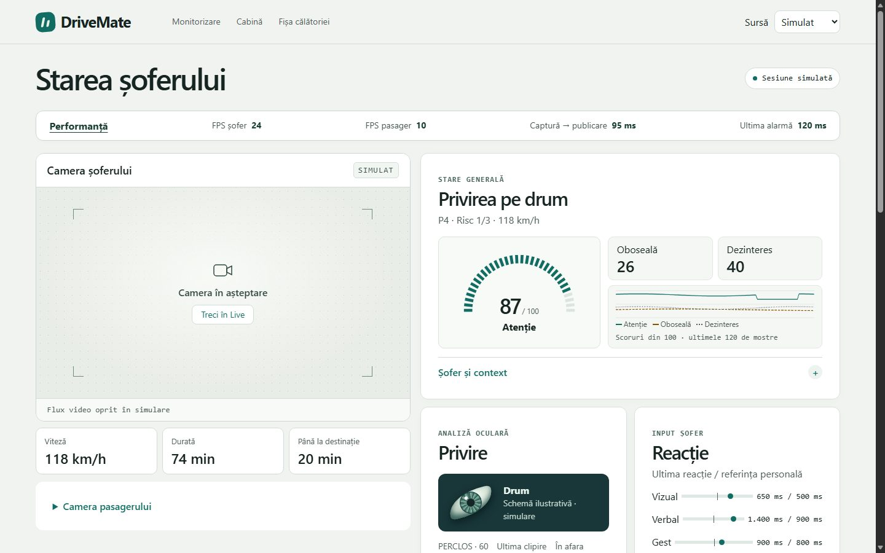

Material și culoare
Porțelan
#F1F3F0 · fondCerneală
#172522 · textGrafit
#192C2A · videoPetrol
#116C63 · selecțieChihlimbar
#875300 · degradatCarmin
#AE343C · alarmă
Monitorizare · cameră și instrumente

În simulare, rama păstrează spațiu pentru camera șoferului. Butonul „Treci în Live” conectează pagina la serviciile locale. Scara segmentată arată atenția pe 100 de puncte. Valorile numerice rămân vizibile lângă grafic.
Vizor ocular
Linie fină inspirată de conturul farului din referință. Marcajul anatomic live cere un decupaj al aceluiași cadru de la P1.
Reacție vizuală
Exemplu · referință personală 500 ms
Linia întreruptă fixează referința. Marcajul petrol se deplasează o singură dată, la primirea unei reacții noi. Scara exemplului este 0–1.000 ms.
Voce vizuală
Instrument Sans pentru titluri și etichete. IBM Plex Mono pentru cifre, ore și unități. Mostrele folosesc fonturile instalate, cu Segoe UI și Consolas ca rezervă.
24 fps 120 ms 0,27 EARMargini desktop 32 px, spațiere de bază 8 px, suprafețe mate, rază 16 px. Pe video, etichetele au fundal opac.
Ierarhie și interacțiune
Performanță sus. Camera ancorată în stânga. Stare generală și previzualizări în dreapta. Privire, stare, reacție, cabină și asistent au fiecare două sau trei valori dominante.
Detalii și stări de verificat
Fiecare modul păstrează locul valorii lipsă cu „—”. Conexiunea pierdută arată vechimea datelor. Graficele se actualizează direct, cu întreruperi la mostre lipsă. Alarma apare imediat, cu text și simbol. Harta și simulatorul au ecrane proprii.